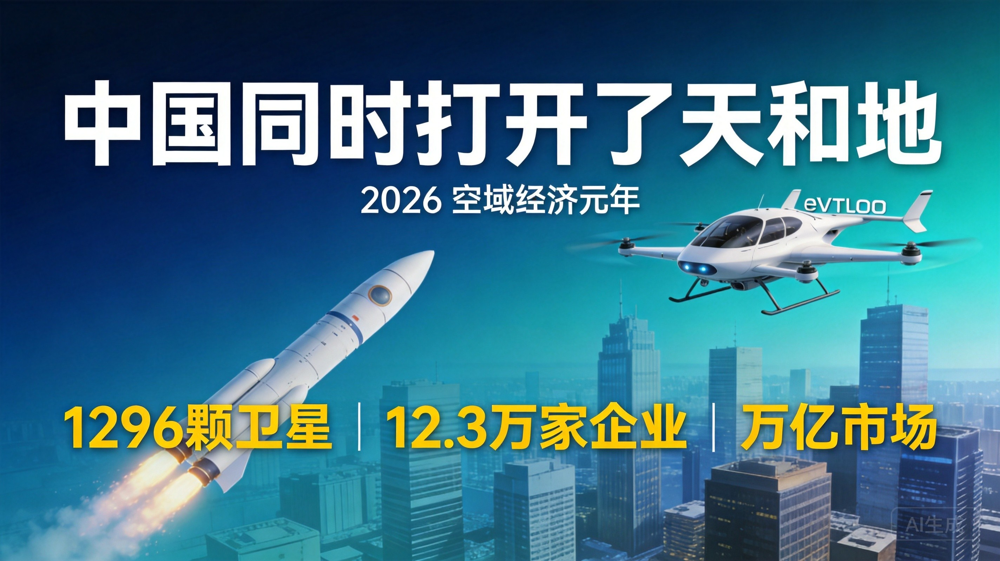
2026年7月，中国同时打开天和地 — 长征十号乙首飞回收成功 × 低空经济制度性开放
2026年7月12日 · 小K爱研究 · 深度分析
你看，这是一枚硬币。
正面，是昨天长征十号乙发射回收成功——火箭第一次被一张海上大网稳稳接住。
反面，是发改委+工信部联合发文——低空经济+商业航天，同时获得国家级系统性松绑。
同一枚硬币，两个面。一个向上打开太空，一个向下打开城市上空的1000米。
合在一起，中国在2026年同时打开了天和地。
而硬币的反面，藏着一个大多数人没意识到的事实：火箭领域中国还在追赶美国，但在低空经济领域——中国已经是全球的定义者。
2026年7月10日上午12时15分，长征十号乙运载火箭从海南商业航天发射场升空。（来源：新华网，2026年7月10日）
63米高的箭体，760吨重，7台液氧煤油发动机并联，起飞推力约890吨——约等于20层楼高的钢铁巨人，以近900吨的力量撕裂空气。
一二级分离后，真正的考验才开始。一子级从海拔100公里以上的高度开始下落，在大约6分钟里完成了一套极限"空中体操"：滑行调姿→动力减速→气动减速→最后精准落入海上回收平台的"井"字形拦阻网。
两个历史性的"第一"同时诞生：
中国首次成功实施运载火箭一子级可控回收。全球首次实现运载火箭海上网系回收。
（来源：新华网、《环球时报》，2026年7月10-11日）
过去，长征火箭的任务是"把东西送上去"。现在，长征十号乙的任务是"把东西送上去，再把最贵的部分接回来"。
这个区别，值万亿。因为传统火箭最贵的部分——发动机、飞控系统、结构件——打完一次就扔了。这相当于每坐一次飞机就把整架波音737报废掉。火箭回收的本质，就是把"一次性消费品"变成"可重复使用的工具"。SpaceX用十年时间证明：回收复用可以把每公斤入轨成本从5万美元打到2700美元，降幅超过95%。
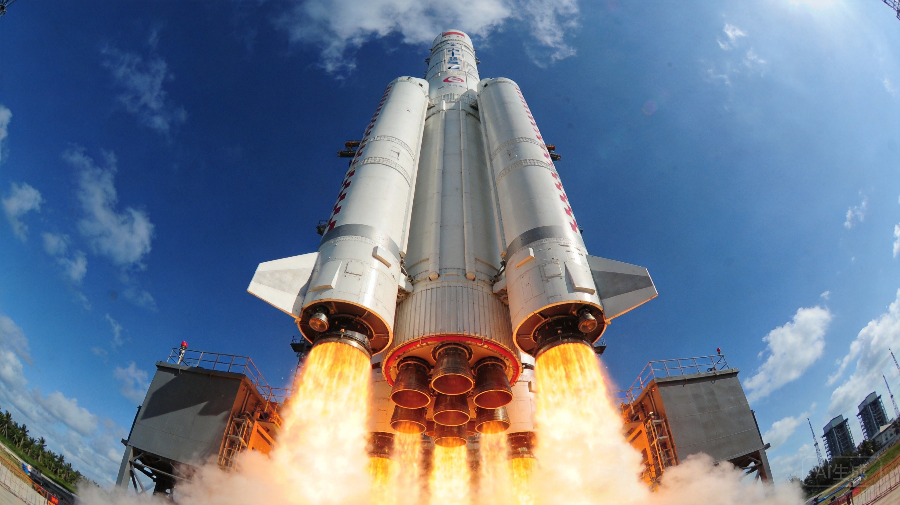
长征十号乙发射升空瞬间，箭体底部7台发动机同时点火，橘红色火焰照亮发射台
长征十号乙不是单独存在的。它是一个家族的成员：
关键设计：长征十号乙的一子级=长征十号甲的一子级。 甲回收回来的一子级，直接给乙用——用载人任务的最高安全标准倒逼商业火箭品质，同时用商业任务的高频次发射摊薄载人火箭的研发成本。
（来源：央视新闻报道，2026年7月10日）
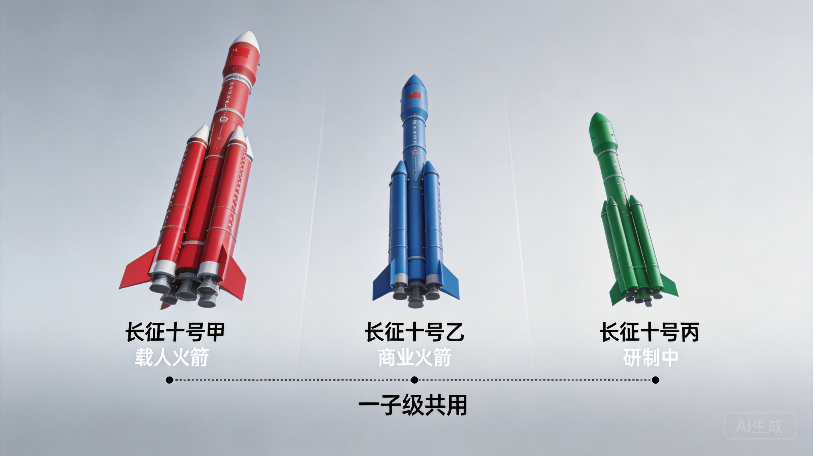
长征十号家族：甲（载人）、乙（商业复用）、丙（在研主力），一子级通用设计
火箭回收不是为了炫技。是因为天上有张网在等着被铺。
千帆星座规划总规模超1.5万颗卫星，一期目标1296颗，2027年完成。截至2026年7月，已累计发射238颗在轨。但要把1296颗卫星送上天，需要每年数百次发射——如果还用一次性火箭，成本根本扛不住。
（来源：澎湃新闻/上观新闻，2026年7月10日）
低轨卫星组网+可复用火箭降本+政策松绑——这三件事同时发生，不是巧合。是中国在太空中"修路"的集中发力。
而这条路，不仅仅服务于太空。它还服务于地面上的那张网。
中国在太空领域还远远落后于美国，但在离地面1000米以下的空域，故事完全反过来了。
大多数人以为美国科技全面领先——芯片、AI、火箭，确实都是。但在低空经济这个赛道，中国不是"追赶者"，而是"定义者"。
这不是情绪判断。看数据：
| 对比维度 | 中国 | 美国 |
|---|---|---|
| 政策力度 | 连续三年写入政府工作报告，新《民航法》2026年7月1日施行 | FAA审批缓慢，认证流程冗长 |
| 适航进度 | 亿航全球首个"四证齐全"；峰飞V2000CG吨级无人驾驶三证齐全 | Joby仍在FAA冲刺，认证停滞在第4-5阶段 |
| 企业数量 | 12.3万家（企查查2026年4月） | 数百家 |
| 国产化率 | 95%以上 | 依赖全球供应链 |
| 订单规模 | 仅eVTOL订单总额超300亿元（2025年） | Joby零营收，尚未实现商业交付 |
| 飞行验证 | L4级自主飞行8万+架次 | 仍在测试阶段 |
（来源：企查查、中国民航局、21世纪商业报道、AeroMech Insider 2026年7月）
美国eVTOL领头羊Joby，截至2026年7月仍在FAA第五阶段认证中挣扎。 首架FAA合规飞机2026年3月才完成首飞，Q1财报零营收，每股亏损$0.12。
（来源：AeroMech Insider 2026年7月6日；Joby Aviation官方公告 2026年3月11日）
而中国的亿航，已经"四证齐全"、在22个国家飞行、累计超8万架次安全运行。
一边是零营收、还在跑认证；一边是万亿市场、制度性开放、全球交付。
一个有趣的格局正在形成：自动驾驶，美国领先；低空经济，中国领先。 两个赛道各自有各自的领先者，而底层技术正在相互溢出——这正是本文最核心的发现之一。
为什么中国能在低空经济领先？往下看。
先定义一下范围。
低空经济，就是从地面向上1000米的空间里，长出来的新经济。
你可能会想：1000米能干嘛？答案可能超出你的想象——
无人机：消费级（航拍、娱乐）、工业级（巡检、植保、测绘）、运载级（物流配送）。这一类已经成熟，2025年我国民用无人机总产值达1761亿元，注册无人机328.7万架，全年飞行4530万小时。
eVTOL/飞行汽车：电动垂直起降飞行器。多旋翼、复合翼、全倾转——这是正在爆发的品类，也是本文最核心的故事线之一。
直升机：传统通航+智能化改造。存量市场。
飞艇/浮空器：通信中继、监控等特殊场景。
轻小型固定翼：飞行体验、运动飞行。
90%以上的经济规模集中在前三类。2026年被业内称为"量产元年"。
（来源：中国民航局、低空经济网，2026年7月）
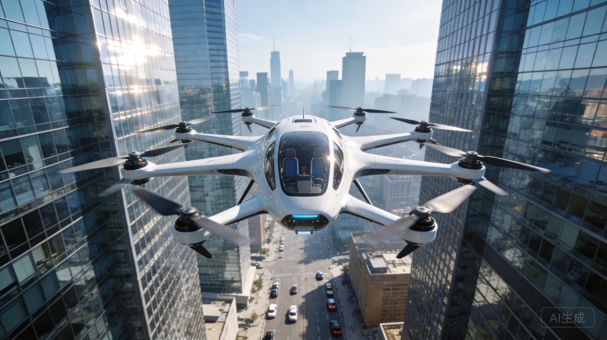
低空经济载体分类：从地面向上1000米分层展示各类飞行器及其应用场景
数字会说话。
（来源：低空经济网，2026年7月1日）
政策里程碑更是密集：
这不是"鼓励发展"，这是"制度性开放"。
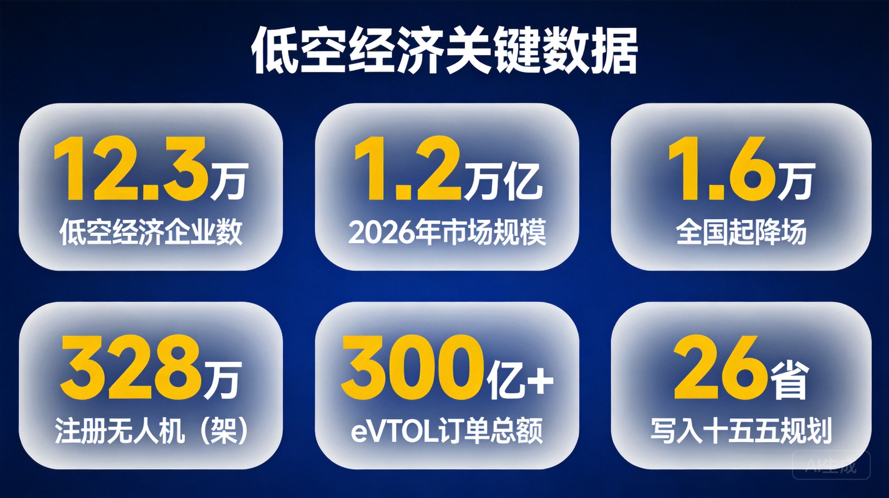
低空经济关键数据仪表盘：企业数、市场规模、起降场数、政策文件时间线
这是整篇文章最重要的逻辑链条之一。
过去几年，AI在三个维度上逐步进入物理世界：
第一站：自动驾驶。 AI在地面上开车。Waymo在旧金山和凤凰城做无人出租车，百度Apollo在北京亦庄做萝卜快跑。这件事我们已经聊过。
第二站：人形机器人。 AI在工厂里操作。特斯拉Optimus、Figure 02在产线上搬箱子、拧螺丝。这件事我们也已经聊过。
第三站：无人驾驶eVTOL。 AI在空中飞。
这三站的底层逻辑完全一样：感知→决策→控制→安全冗余。传感器看世界，AI理解世界，算法做出决策，控制系统执行，冗余系统保证安全。只是执行环境从地面换到了空中，从二维变成了三维。
而2026年，第三站有了一个标志性的验证——
亿航EH216-S：全球首个"四证齐全"的无人驾驶载人eVTOL。
型号合格证（TC）+ 标准适航证（AC）+ 生产许可证（PC）+ 运营合格证（OC）。四个证，全部拿到。全球独此一家。
（来源：中国民航局，2025年3月颁发OC；亿航智能官方公告，2026年7月）
完全无人驾驶，没有飞行员——这等于L5级自动驾驶在空中的实现。
安全冗余做到了什么程度？灾难性事故概率控制在十亿分之一量级（每亿飞行小时不超过一次）。三余度飞控+地理围栏+链路监控。L4级自主飞行器已完成超过8万架次安全飞行，平均无故障工作时间（MTBF）超5000小时。
（来源：全球空中出行行业报告、CSDN技术分析、亿航智能公开数据）
亿航的运营航司自2025年3月取得OC以来，保持"零事故、零违规"安全飞行记录，累计完成超过3000架次安全飞行。全球飞行版图已扩展至22个国家。
（来源：亿航智能官方公告，2026年7月8日）
关键认知：这不是"造了个能飞的无人机"，而是"把自动驾驶的工程能力搬到了天上"。
感知系统从摄像头+激光雷达变成了多模态传感器融合，决策系统从地面路径规划变成了三维航线规划，控制系统从方向盘+油门变成了飞控+电推进——但底层哲学完全一样：用AI让机器安全地在人类世界中自主运行。
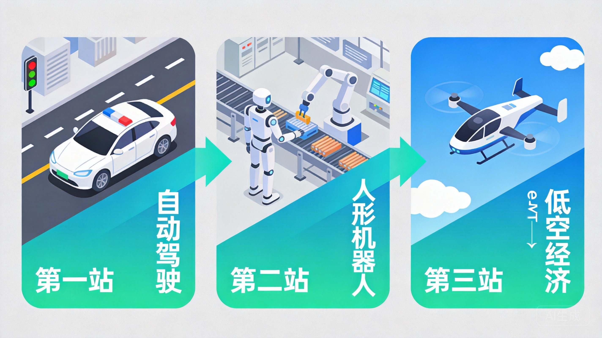
物理AI三站：自动驾驶（地面）→ 人形机器人（工厂）→ 无人驾驶eVTOL（空中），底层技术共通
当AI飞行能力成熟，整个低空经济都在经历一场"自动驾驶化"改造。
大疆推出"灵眸"多模态AI系统——端侧实时场景理解+自主决策。无人机不再只是"遥控飞机"，而是能自己看懂环境、自己做决定的空中智能体。大疆首款垂直起降运载无人机DJI EV50已在珠峰完成最高8861米海拔飞行，验证了极高海拔环境下的自主运行能力。
（来源：大疆官方，2026年珠峰科考报道）
中直股份（航空工业旗下）eVTOL全系搭载AI飞控——环境感知、自动绕障、智能航线规划、动力失效重构、自主返航，五大核心能力全面覆盖。其AR-E800订单已超400架。
（来源：东方财富，中直股份公告）
沃兰特——2026年5月28日在四川自贡完成中国首次高等级商用客运eVTOL"有人驾驶转换飞行"：从旋翼垂直起降模式平滑切换到固定翼水平巡航模式，再反向切换。这个动作被业内称为eVTOL的"技术珠峰"——全球只有三家企业做到：美国Joby、英国Vertical Aerospace、中国沃兰特。
（来源：21世纪商业报道，2026年7月10日；人民网四川频道，2026年5月31日）
订单数字更值得关注：
（来源：21世纪商业报道、iWeekly 2026年7月、低空经济网）
一个关键信号：沃兰特来自汽车供应链的零部件占比已达30%-40%。
创始人董明说："很多来自新能源汽车供应链。"C+轮引入的蔚来资本，为其供应链协同打开了新的想象空间。
这意味着什么？自动驾驶十年积累下来的供应链——电池、电机、电控、传感器、碳纤维结构件——正在"溢出"到低空经济。就像自动驾驶的人才和技术溢出到人形机器人一样，物理AI的能力正在沿着"地面→低空"的路径快速迁移。
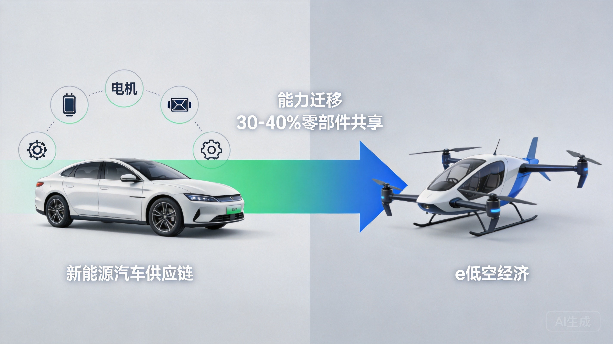
供应链迁移路径：新能源汽车十年积累的电池、电机、电控、传感器产业链，正在"溢出"到eVTOL
价格是最直接的说服力。
沃兰特与首个确认订单客户——南航通航联合核算：飞行5分钟、航程20公里的单座成本为60元。
每公里单座运营成本，是传统直升机的1/8到1/10。
为什么这么便宜？两个原因：
第一，纯电驱动。 不用航空燃油，用电池和电机。能源成本直接降一个数量级。
第二，复合翼气动效率。 垂直起降用旋翼，巡航用固定翼。复合翼的巡航效率远高于直升机的旋翼巡航——直升机飞到200公里/小时就接近极限了，复合翼可以轻松飞到235公里/小时，而且更省电。
60元坐20公里的"飞的"。这不是科幻，这是2026年已经算出来的真实成本。
横向对比一下：打网约车从北京国贸到首都机场，30公里大约120-150元，单座成本约4-5元/公里。eVTOL的单座每公里成本如果按60元/20公里=3元/公里算，已经接近网约车的水平了——而且它飞的是天上，直线距离更短，不堵车。
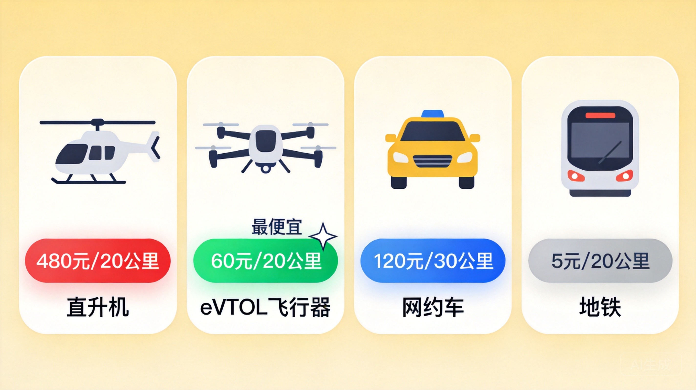
成本横向对比：eVTOL单座每公里3元，已接近网约车水平——而且飞的是天上
当然，这还不是最终价格。随着电池能量密度提升（欣界能源固态锂金属电池"猎鹰"已突破480Wh/kg，下一代目标500Wh/kg，计划2026年底量产）、量产规模扩大、运营效率提高，成本曲线还会继续向下走。宁德时代2026年7月发布的第四代航空电池，能量密度突破320Wh/kg，循环寿命达1998次，直接推动整机续航提升40%。
（来源：21世纪商业报道，2026年7月10日；欣界能源、宁德时代公开数据）
回到开头那个反常识的判断——低空经济中国领先，不是某一个维度的领先，而是全维度的碾压。
更值得关注的是趋势：亿航的eVTOL全球飞行版图已扩展至22个国家，正在泰国、墨西哥等市场推进商业运营审批。峰飞V2000CG不仅拿到中国三证，还获得印尼民航局型号认可证（VTC）——中国eVTOL标准正在输出海外，从"国内领跑"走向"定义全球标准"。
而美国的Joby，连FAA认证都还没跑完。
这就是低空经济的现状：当美国还在纠结"要不要开放"的时候，中国已经在回答"怎么飞得更好"。
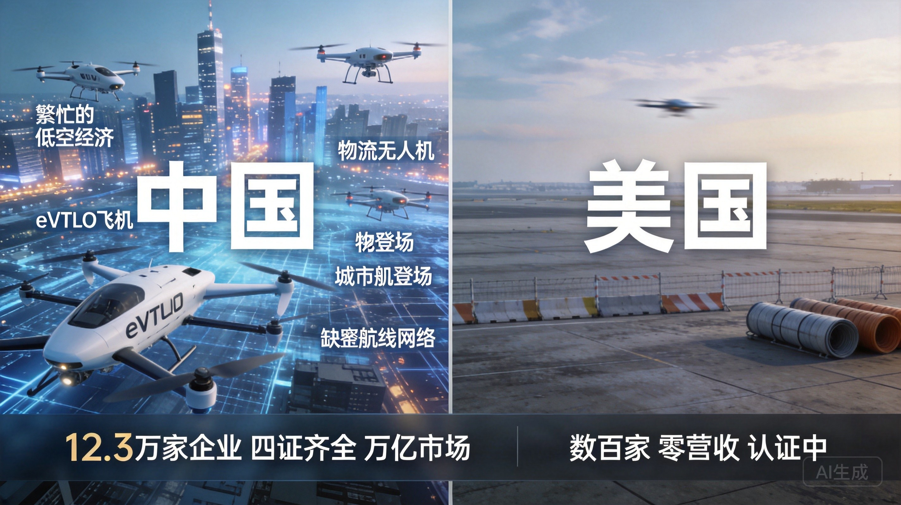
中国eVTOL全球化布局：亿航22国飞行、峰飞获印尼VTC、沃兰特海外500+架订单
天网和地网，看起来一个往上飞一个往下飞，但它们的底层是同一套东西。
先说最直观的：技术同源。 碳纤维复合材料、飞控芯片、电推进系统、多传感器融合——火箭和eVTOL用的几乎是同一套技术栈。液氧煤油发动机和电动推进系统看似不同，但飞控算法、热管理、结构轻量化、可靠性工程的思维方式完全一致。
再说人才溢出。航天体系的人才正在向低空经济流动。沃兰特的核心团队来自中国商飞、空客等航空体系。更广义地说，自动驾驶十年积累的工程能力——感知、决策、控制、安全冗余——正在溢出到空中。这和人形机器人吸收自动驾驶能力是同一个逻辑。
但最关键的连接，是基础设施共用。这才是天网和地网真正被焊死在一起的原因。
这是大多数文章没有讲清楚的逻辑——
低轨卫星互联网，是低空经济飞出城市的前提条件。
为什么？因为今天的地面通信基站，覆盖范围是有限的。一个5G基站的信号，在城市环境下有效覆盖半径大约5-10公里。在城市里，基站密度够高，信号够好，无人机可以靠地面网络实现通信、监控、数据回传。
但无人机一旦飞出城市呢？
飞到山区送药——没有基站。飞到海上巡检——没有基站。飞到偏远地区执行任务——还是没有基站。
没有通信链路的飞行器，就是一架失联的风筝。
这就是千帆星座对低空经济的核心意义。低轨卫星单颗覆盖半径数百公里，324颗卫星组网完成后，可以实现中国全境及周边区域的连续覆盖（来源：上海垣信卫星，2026年7月MWC上海展披露）。到那时，无人机从深圳起飞，飞到南海某个岛礁，中间没有任何地面基站——但头顶的千帆星座卫星可以全程接管通信链路，实现数据实时回传。
打个比方：就像手机从座机变成移动，靠的是基站密织；无人机从"城市内飞"变成"全国飞"，靠的是卫星星座。
而且，千帆星座不只是通信。它正在向"通导遥算智安"六位一体的综合空间基础设施演进（来源：上海垣信卫星CEO沈洪波，2026年7月）。通信之外，还集成了导航增强（与北斗互补）、轻量级遥感、边缘算力——这些能力全部是低空飞行器需要的。
天网，就是地网的基础设施。这不是类比，这是事实。
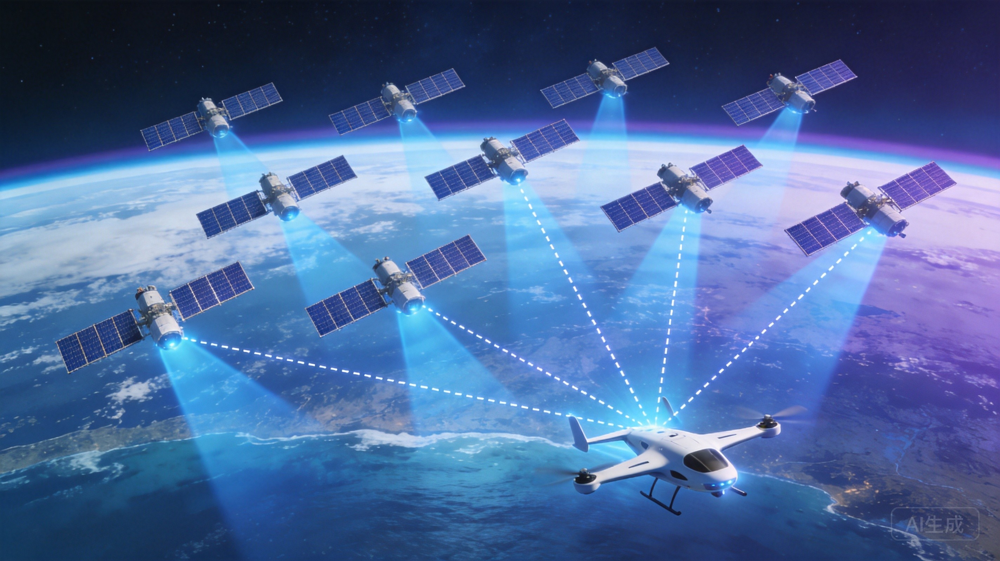
千帆星座为低空飞行器提供通信链路：无人机飞出城市，卫星接管全程通信
如果说千帆星座是低空经济的"通信骨架"，那北斗就是它的"定位骨架"。
每一架无人机、每一个eVTOL的精准飞行，底层都依赖北斗的高精度定位。
具体到什么程度？
基础定位： 北斗三号全球定位精度优于10米，亚太地区精度达2-3米。2026年5月完成的第一轮全星座核心算法更新后，精密单点定位服务的水平精度已提升至0.3米、垂直精度提升至0.6米（来源：中国卫星导航系统管理办公室，2026年5月）。这对低空飞行的精准航线规划、电子围栏、起降对准至关重要。
短报文功能： 这是北斗的全球独有能力——在没有地面通信网络的偏远地区，无人机仍可通过北斗短报文发送位置信息。北斗三号区域短报文单次最多可发约1000个汉字，全球短报文可发40个汉字（来源：北斗系统官方资料）。想象一架无人机飞到深山执行救援任务，地面信号完全中断，但通过北斗短报文，它仍能把自身坐标和灾情信息发回指挥中心。这个能力，GPS没有。
北斗+5G-A融合定位： 2026年2月，工信部等五部门联合发布《关于加强信息通信业能力建设 支撑低空基础设施发展的实施意见》，明确推动北斗与5G网络深度融合——通过5G网络快速播发北斗定位增强信息，为低空飞行器提供更精准、更快的定位服务。首批12个低空经济试点城市已完成北斗低空飞行服务系统部署，试点区域内低空飞行作业效率提升40%，违规飞行事件下降65%（来源：交通运输部，2026年5月）。武汉大学等机构正在试验厘米级融合定位——这是eVTOL在城市楼宇间安全飞行的技术基础。
北斗+千帆+5G-A，三层定位通信网络叠加在一起，构成了低空经济的数字底座。缺任何一层，飞行器都飞不远、飞不稳、飞不安全。
第二部分提到了一个关键信号：沃兰特30-40%零部件来自新能源汽车供应链。这背后是一条完整的物理AI能力迁移路径——
感知算法迁移。 自动驾驶十年积累的多传感器融合算法——激光雷达点云处理、4D毫米波雷达目标识别、视觉SLAM——正在被移植到eVTOL的避障系统。底层逻辑完全一致：感知周围环境→建立三维模型→预测障碍物运动→规划规避路径。区别只是执行环境从地面二维变成了空中三维。国内头部传感器厂商如禾赛科技、森思泰克的4D成像毫米波雷达，已经同时供应自动驾驶和eVTOL两条产品线（来源：CSDN低空经济感知系统分析，2026年7月）。
传感器成本大幅下降。 自动驾驶的大规模量产，让激光雷达、毫米波雷达、高精度IMU等传感器的成本在过去五年下降了80%以上。这些车规级传感器经过适当改造，可以直接用于低空飞行器。如果没有自动驾驶产业把这些传感器"打下来"，eVTOL的感知系统成本将高出数倍。
安全冗余架构迁移。 自动驾驶积累的功能安全体系（ISO 26262标准），正在成为eVTOL适航认证的重要基础。eVTOL要求的灾难性事故概率控制在十亿分之一量级——这和自动驾驶L4/L5的安全要求是同一个数量级。亿航的三余度飞控、多重冗余控制系统，底层的安全工程方法论，和自动驾驶是同一套。
供应链直接复用。 沃兰特的案例最具代表性。电池来自新能源汽车供应链（宁德时代等），电机来自车规级电驱供应商，碳纤维结构件共享汽车产线。创始人董明说"很多来自新能源汽车供应链"——这意味着eVTOL不需要从零搭建供应链，直接站在自动驾驶十年建立的产业链之上。蔚来资本投资沃兰特C+轮，本质上就是在打通"地面→低空"的供应链协同通道。
这条迁移路径，中国有独特的优势。 因为中国在自动驾驶和新能源汽车两个领域都已经是全球最大的市场。全球最多的自动驾驶路测数据、全球最大的新能源汽车供应链、最完整的传感器产业链——这些能力"溢出"到低空经济时，中国的起跑线就比别人高。
物理AI能力迁移路径：自动驾驶+新能源汽车 → 感知、传感器、安全冗余、供应链全面溢出到低空经济
天网和地网还有一个容易被忽视的连接点：空域管理。
想一想：如果天上卫星在组网、低空无人机在送快递、eVTOL在载客运人——这三类飞行活动，全都在同一个空域里。它们的通信链路、导航基准、避障规则、航线管理，必须是一套统一的系统。否则，天上就是一团乱麻。
2026年正在建设的"低空智联网"，就是在解决这个问题。
它的核心架构是"网-图-平台-云"四位一体（来源：《低空智联技术与应用白皮书2026》）：
工信部等五部门2026年2月联合发布的实施意见，明确提出到2027年实现低空信息通信基础设施的系统性覆盖（来源：工信部等五部门《实施意见》，2026年2月）。
这套系统的本质，是给1000米以下的天空建一套"交通信号灯+导航系统+监控摄像头"。 就像地面交通需要红绿灯、导航、交警一样，低空飞行也需要通信、定位、管理。而这套系统的底层——5G-A、北斗、AI、云计算——恰好和天网用的是同一套技术。
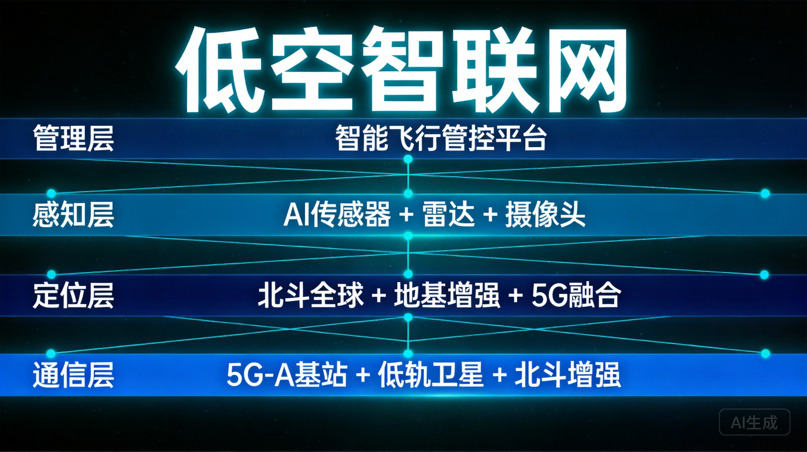
低空智联网"网-图-平台-云"四位一体架构：给1000米以下的天空建交通系统
把所有这些放在一起，可以提炼出一个公式：
底层驱动力是什么？
物理AI成熟——AI能安全地在三维空间中自主运行。
这不是天网和地网分别成熟然后"恰好"碰在一起。它们之所以同时成熟，是因为底层能力——AI的感知、决策、控制、安全冗余——在同一时间达到了临界点。
2026年三件事同时发生量产元年——自动驾驶商业化运营（萝卜快跑、Waymo）、人形机器人进入工厂（Optimus、Figure）、eVTOL进入适航取证和量产阶段（亿航、沃兰特、峰飞）——这不是巧合。是能力临界点。
而火箭回收的首次成功，则为天网提供了成本下降的起点。当每公斤入轨成本从2万元降到1万元再降到5000元，卫星组网的速度会指数级加快，低空飞行器的通信覆盖会指数级扩大。
再看一遍这个公式的每一层：
这五层，从火箭回收到eVTOL适航，从卫星组网到北斗增强，全部在同一时间成熟。天和地，就这样被同一股力量同时打开。
物理AI能力临界点：2026年自动驾驶/人形机器人/eVTOL同时进入量产元年
天网：关键拐点在2027年。
2027年是复用飞行能否常态化的关键年份。如果长征十号乙能在2026年底完成复用飞行验证，2027年实现"回收—检修—再发射"的稳定循环，中国商业航天就真正进入了"降本赛道"。
同时关注千帆星座组网进度：一期1296颗卫星，2027年完成。如果保持当前加速势头（2026年上半年6次发射部署92颗），2027年将进入"每月多次、每次18-20颗"的高密度部署阶段。千帆星座一旦具备全球覆盖能力，低轨卫星互联网将从"概念"变成"服务"。
地网：2027-2028年适航认证集中爆发。
沃兰特目标2027年取证，沃飞长空预计2026下半年-2027年完成TC取证，时的科技E20也在冲刺中。2027-2028年将是一个适航认证集中爆发的窗口期，批量交付开始，成本曲线陡峭下降。
类比新能源汽车：2012年的特斯拉年产仅2650辆，亏损严重。但此后十年，全球新能源汽车渗透率从0.2%飙升到20%以上。eVTOL正处在"2012年的新能源汽车时刻"——技术路线基本确定，政策引擎已经启动，资本正在大规模涌入，商业化的最后一公里正在被打通。
（来源：市值风云/硬科资本论，2026年7月9日）
最大的交汇点：卫星互联网+无人机=飞出城市。
这是天网为地网赋能的最大乘数效应。当千帆星座完成全球覆盖，低空飞行器就不再局限于城市内部的短途运输。无人机可以飞到山区送药、飞到海上巡检、飞到偏远地区通信——因为天上的卫星为它们提供了通信链路和导航增强。
天网让地网飞得更远，地网让天网的需求更大。两张网互相喂养、互相加速。
想象一下这个场景：2028年，一架eVTOL从深圳起飞，飞往海南某个偏远海岛。飞到海上，地面5G信号消失了。但头顶的千帆星座卫星接管了通信链路，北斗提供厘米级定位，AI飞控自动规划最优航线避开船只和鸟群。整架飞行器从起飞到降落，全程自主运行，乘客只需要坐着看风景。
这个场景里，天网和地网的所有要素全部到位了：低轨卫星通信、北斗导航、AI飞控、电推进系统、适航认证、起降场设施——缺一不可。而2026年，所有这些要素都在同时成熟。
上一个同时打开天和地的国家，是美国。
1960年代，阿波罗计划把人类送上月球，波音747让洲际飞行变成大众消费。一个打开太空，一个打开天空。美国由此奠定了半个世纪的航空航天霸权。
那个时代，美国一年发射几十枚火箭就是世界第一。波音747首飞那年，全球航空旅客总量不到5亿人次。今天，全球每年航天发射超过300次，民航旅客超过45亿人次。当年打开天和地的那个决定，塑造了此后60年的全球经济格局。
60年后，轮到中国。
这不是情绪判断，是数据判断：
天打开了。地也打开了。
中间1000米到轨道高度的整个空域，正在从"飞不过去的地方"变成"经济空间"。
这是2026年最值得关注的产业事件——不是因为它今天就赚钱，而是因为它定义了中国未来十年的增长边界。
免责声明： 本文为赛道级产业分析，不构成任何投资建议。文中涉及的具体企业数据来自公开信源，仅供行业研究参考。适航取证进度、商业化落地时间、市场规模预测等均以官方公告及权威机构数据为准。投资有风险，决策需谨慎。
数据来源汇总：